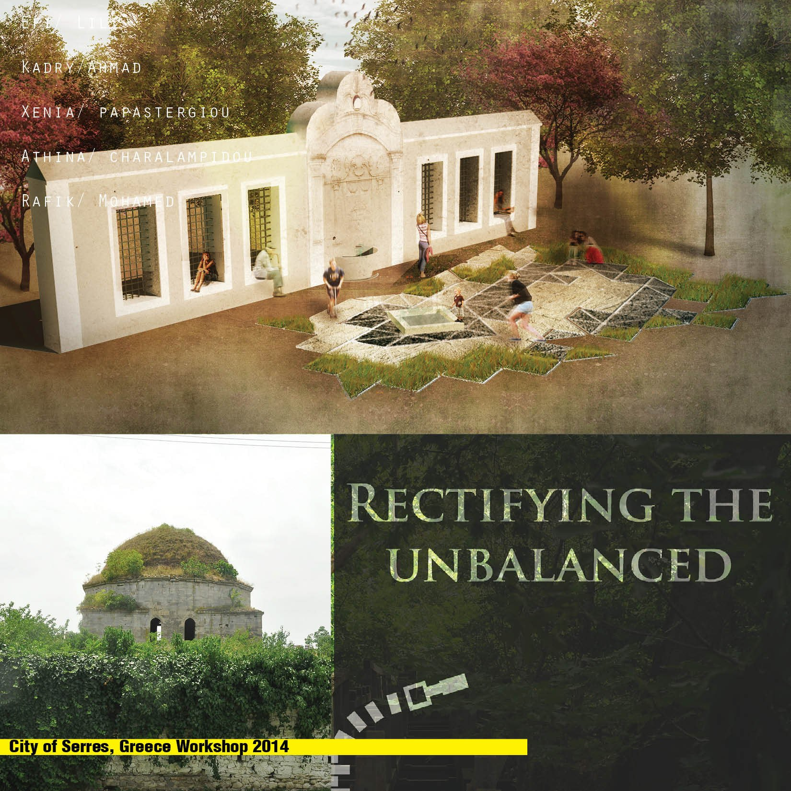
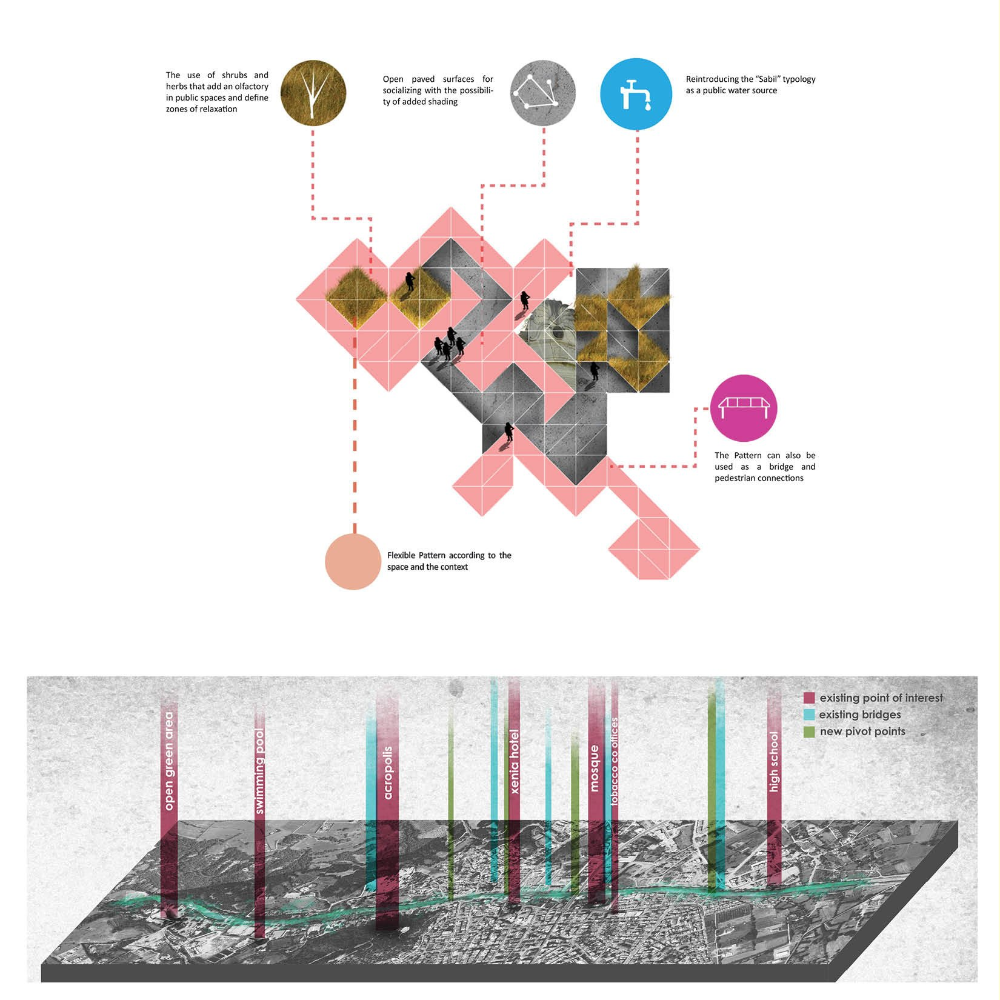

/ WORKSHOP
City of Serres
A public-space workshop for a Greek city of countless, overlooked layers — a deliberately minimal, incremental intervention that reconnects the river banks of the valley and lets residents celebrate their own identity, culture and history.

/ CONCEPT
A minimal spark for a city of countless layers.
The many layers of Serres go unnoticed — by travellers, by tourists, even by residents. The city needs a series of sparks that can carry a long-term effect on daily life: a more inclusive, higher-quality public realm reached without gentrification. A deliberately minimal approach restores balance to the river banks of the valley, where much of the city’s enjoyable life — its identity, culture and history — already takes place.
After walking the valley and reading its atmosphere, the first move was simply to connect the two river banks and open up the opportunities on the far side. A set of “buzz words” captured the ambience of each area, then translated into activities that keep the banks alive. Their exact locations were fixed against the council’s land-use map, and the resulting nodes were linked both at ground level and by sightline to the surrounding sites.
The whole strategy rests on carefully studied, incremental interventions staged over a long period — the condition for its success. A pattern deduced from the city’s historic grids and sacred sites, at once random and rhythmic, ties the nodes together.
The intervention reads as minimal, but its repercussions are not: it opens the door to new development and cultural projects, and lets citizens celebrate the city’s identity through performances, events and programmes in public space. It begins with a single seed — reintroducing sabils, public water fountains that double as windows onto the city’s history. As the resident quote framing the work has it: everyone can produce something complicated; it takes a touch of genius to go the other way.
